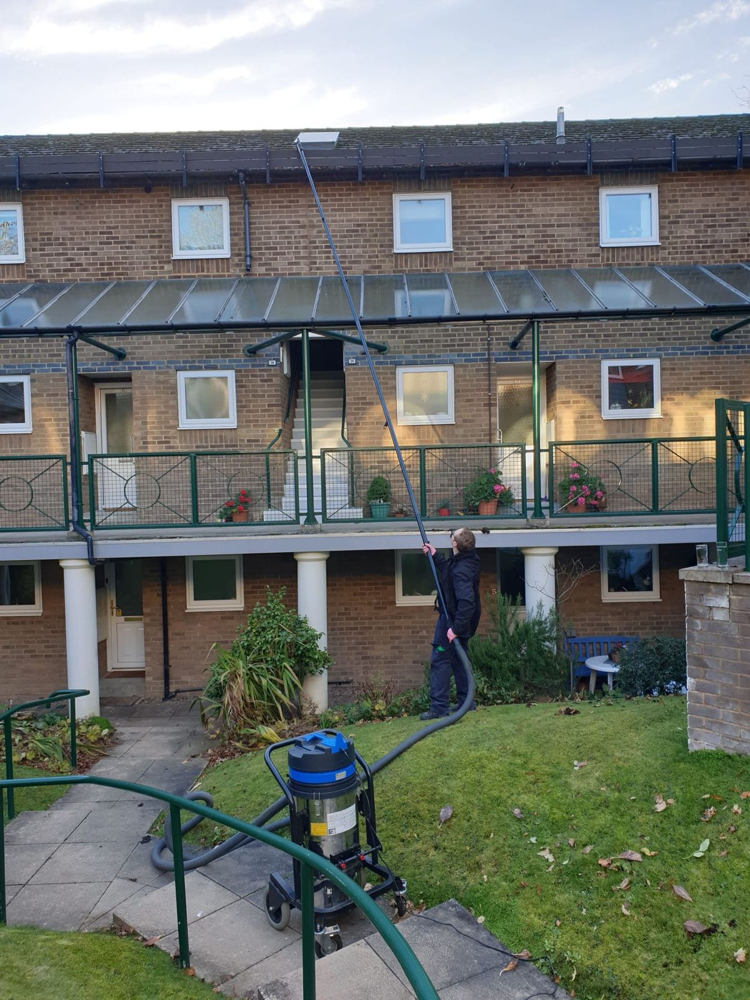

Gutter Cleaning & Repair
Keep your gutters clear and protected. Blocked or damaged gutters cause damp, leaks and costly damage — we fix it before it becomes a problem.
- Fully insured
- Free, no-obligation quotes
- Local & family-run
- 20+ years' experience
No ladders needed — SkyVac reaches up to 4 storeys
AWC is your local expert for professional gutter cleaning, clearing and repairs across Sheffield, Rotherham & Chesterfield.
Our SkyVac high-reach vacuum system lets us clear gutters safely from the ground — no ladders against your home, no mess left behind. With the built-in camera we can show you before & after photos, so you know the job's done properly.
Get a free quote
What we do
Gutter cleaning
- Remove leaves, moss, dirt & debris
- Clear downpipes & ensure free flow
- Before & after camera photos
Repairs & replacement
- Leaking joints & brackets fixed
- Sagging gutters realigned
- Cracked sections replaced
- Downpipe repairs & replacements
- Fascias & soffits on request
Gutter guards
- Prevent future blockages
- Reduce cleaning frequency
- Fits most gutter types
- Supply & installation
Why choose AWC for your gutters?
Family-run
A local business — not a national franchise.
Safe methods
High-reach vacuum means no ladders against your home.
Fully insured
Full liability insurance — your property is protected.
Fixed-price quotes
We quote before we start. No surprises.
Photo proof
Camera inspection shows you the results.
Peace of mind
Clean gutters protect your home from water damage.
Book your gutter clean
Free quotes for homes, landlords and commercial buildings.